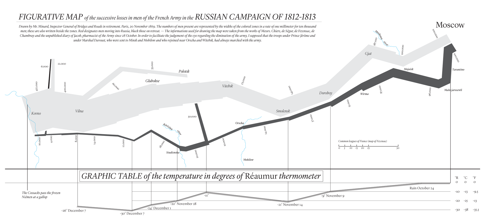

Depiction

Jeremy Leipzig
Department of Information Science
College of Computing and Informatics
Drexel University
Some themes
Depicting data visually fulfills a variety of purposes,
from data exploration and intuitions development,
to descriptive storytelling through infographics,
to expressions of analyses and interpretations of results,
and even web-based, interactive products development.
Regardless of purpose, there are key qualities for success,
such as clarity, simplicity, and truth of representation.
Exploration and visualization
While much of EDA is accomplished through summarization,
like through objective measures of centrality and spread,
it is also helpful to depict data visually.
We've introduced box plots, which show these summaries,
but visualization in EDA let's one see all data at once
and form intuitive assessments about important patterns.
Here, we'll go explore some common visualization types,
and walk through best practices and interpretations.
Histograms
A histogram exhibits the spread of a single data dimension.
There are discrete bins into which the data points fall,
which are tallied and shown as bars,
with heights as counts (frequencies) or probabilities.
Here, bin width/spacing is the variable parameter;
e.g., there can be equal-width and -probability bins.
Important: probabilistic areas, not heights sum to 1!
Kernal density estimates (KDEs) smooth histograms
and algorithmically estimate underlying distributions.
Histograms

Scatter plots
Scatter plots exhibit covariation between data simply,
by placing separate data dimensions on separate axes.
Points are commonly tweaked for shape and color
as a means for expressing multiple scatters together.
Point size can express a third, "intensity" dimension.
While depth and perspective can be used for true 3-d scatters,
anything more is beyond physical perception.
So for more comparisons, it's common make more plots,
e.g., with an array of pairwise-comparison scatters,
but mind axis ranges, inflating/deflating relationships.
Density
An important scatter plot observable is density,
which is straightforward when there are relatively few points,
but plotting many same-color points obscures density.
Once again, color comes in handy here,
where, e.g., color gradients indicate more/less dense regions,
however, this makes density another dimension of data,
which must be determined algorithmically,
Common tools are once again binning and kernel smoothing,
but beware, these rely on the same assumptions as histograms.
Line plots
When one of 2 dimensions are ordered, line plots can be useful.
E.g., stock prices, daily temperatures, traffic density, etc.
Don't forget, all these do is connect the dots,
so points in between shouldn't generally be assumed,
though in exploration, these help highlight trends.
If a line plot jaggedly distracts from a shape,
a variety of smoothing techniques can come in handy,
e.g, moving averages are quite straightforward,
but the different methods all have their assumptions,
so smoothing should be taken with a grain of salt.
Line plots

A line chart in yellow with a 30-day moving average in black.
Maps
With geospatial data, maps make for exciting visualizations.
Points can be scattered atop political, natural etc. features.
"Choropleths" use shade polygons according to intensities,
and so are just polygon-binned scatter plots exhibiting density.
Don't forget: maps rely on projections—the earth is round!
Some projections keep polygon area true to geography,
while others focus on simplicity, making all bodies visible.
"Cartograms" are maps that distort areas intentionally,
and representing data intensities through polygon size.
Infographics
Occasionally, EDA itself can result in a product.
Infographics present summary information quickly and clearly,
often cartoonifying visual information for easy consumption,
and combining different visualization types into one.
We've seen a number of these already!
The goal: bingeably wrap descriptive observations together.
One of the earliest infographics
How many data dimensions are depicted here?
Interactivity
EDA in large or complex data sets can be challenging.
It's great to be able to represent lots of data,
but can one digest 1,000 scatter plots?
This is where sharable interactivity comes into play,
made possible recently with advances in technology.
Web-based apps allow viewers to traverse many plots,
but to truly "explore" some data, movement is necessary.
This can be as simple as a video from successive plots,
and as complex as the panning and zooming in Google maps.
Paramount to interactivity is intuitive navigation.
HTML and interactivity
HTML's malleability makes it an ideal host for interactivity.
With much web-based programming performed in javascript,
an extensive library for interactivity called d3.js was developed.
Other languages have similar functionality,
e.g., python has Bokeh,
and R has Shiny
but these are less developed and/or not free to host!
However, d3.js requires html, css, and javascript skills,
so while the learning curve can be somewhat steeper,
learning it leads to proficiency in web products development,
which is an extremely marketable skill in data science.
What's the point?
With so many visualizations easily accessible,
it's important to maintain focus on goals for depiction.
Consistent values include clarity, trueness, and simplicity,
but often there is a message from analysis to display,
so visualization can be essential to convey interpretation,
as is the case with presentation in storytelling.
So if an outcome is a business decision,
significant emphasis should be placed on interpretation,
which must be carried forward to recipients.
Product development
A common goal in data science is product development,
and customers often experience data visually.
So, instead of communicating hypotheses and interpretations
visualization can bear roles like navigation and uptake.
This again emphasizes simplicity and clarity,
but likewise a need for natural interaction,
i.e., users uptake may improve if instructions are unnecessary.
We'll touch on these topics more in chapter 13,
when we consider generally the role of design in data science.
Recap
Depicting data visually fulfills a variety of purposes,
from data exploration and intuitions development,
to descriptive storytelling through infographics,
to expressions of analyses and interpretations of results,
and even web-based, interactive products development.
Regardless of purpose, there are key qualities for success,
such as clarity, simplicity, and truth of representation.
- Next time: Modeling
-
Does data follow a pattern or emerge from a process?
-
What is hypothesis testing?
-
How do math, stats, algorithms, and machine learning all fit?